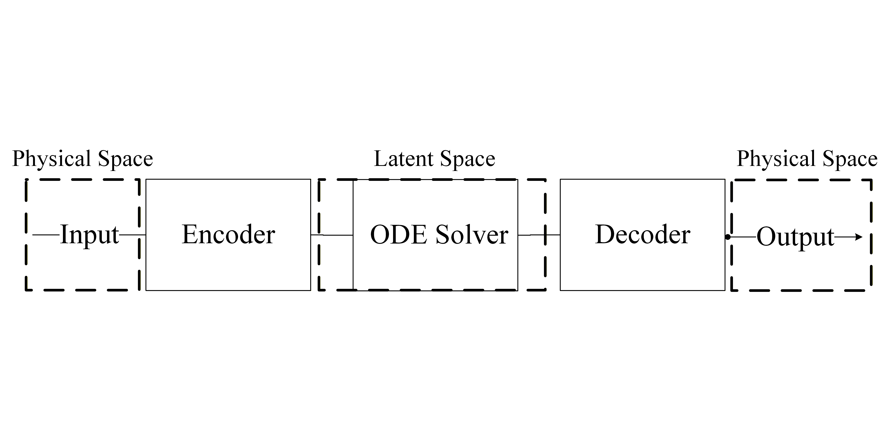
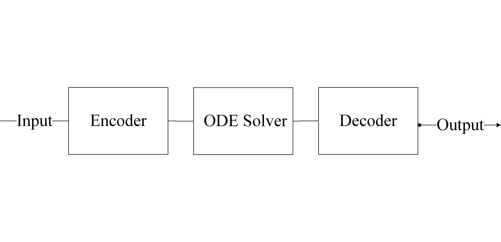
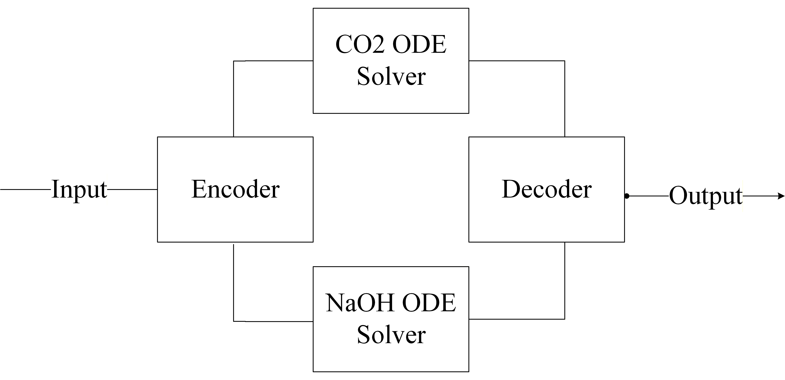
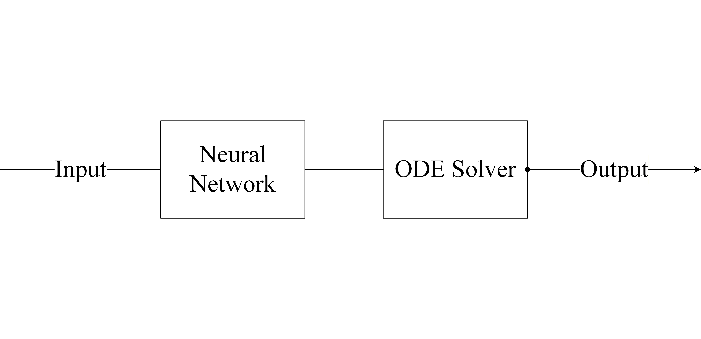
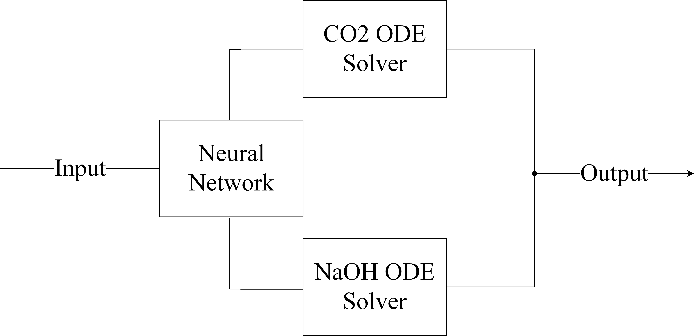
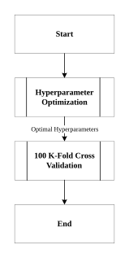
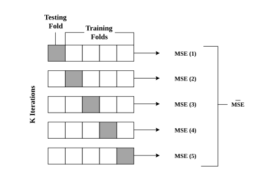

Section 4A: Architectural Design for PIML
Recurrent Neural Network & Neural Ordinary Differential Equations
Overview
This section presents an overview of the Recurrent Neural Networks (RNN) and Neural Ordinary Differential Equations (NODE) variants examined at the architectural level. The rationale for the selection of each variant is subsequently discussed, followed by a comparative evaluation of their performance. The most suitable architectures for RNN and NODE are then identified and adopted for further development in Section 5A, “Physics-Guided Enhancements”. The architectural variants are considered in Table 4.1.
| RNN - Variant | NODE - Variant |
|---|---|
| RNN (Basecase) | NODE-ED (Basecase) |
| GRU | NODE-ED-Uncoupled |
| LSTM | NODE-Context |
| NODE-Context-Uncoupled |
RNN is selected as a basecase due to its well-established capability as a purely-data driven model in predicting temporal dependencies in sequential data. In contrast, NODE is selected as another basecase because it offers a continuous-time formulation of system dynamics that aligns naturally with the governing differential equations of the underlying physical processes, making it particularly suitable for physical incorporation.
Recurrent Neural Network
The studies that have explored physics-informed RNN applications in chemical engineering applications within PIML to date are summarised in Table 4.2, with no reported applications in chemisorption systems.
| Author(s) | Contribution |
|---|---|
| Nai et al. (2026)30 |
A crystallisation process in a batch reactor was modelled, demonstrating that the integration of mechanistic population balance models with an RNN enables accurate recovery of kinetic parameters, even under noisy and limited experimental data. |
| Asrav and Aydin (2023)31 |
A waste treatment process in a semi-batch reactor was modelled, demonstrating that an RNN incorporating governing equations as part of the loss function outperforms feedforward ANN, linear regression, and support vector regression models. |
| Wu et al. (2023)32 |
A crystallisation process in a batch reactor was modelled, demonstrating that the integration of mechanistic population balance models with an RNN enables the design of a model predictive controller for process operation. |
| Zheng et al. (2023)33 |
A control system for nonlinear dynamic behaviour in a batch crystallisation reactor was modelled using an RNN coupled with mechanistic models. |


RNN are designed to process sequential data by maintaining a hidden state that captures information about previous inputs34. In contrast to a standard feedforward neural network, RNN has an additional recurrent connection as displayed in Figure 4.2, which enables the previous time step information to pass through the current time-step throughout the network until the last hidden layer. At every time step, t , the RNN takes an input vector, xt , and updates its hidden state, ht , to predict an output in the following manner with the variables defined in Table 4.3:
| Variable | Description | Variable | Description |
|---|---|---|---|
| ht | Hidden state at time t | σy | Activation function for the output layer |
| ht-1 | Hidden state at time t-1 | Wi | Recurrent weight matrix between hidden and input layers |
| xt | Input at time t | Why | Recurrent weight matrix between hidden and output layers |
| yt | Output at time t | Wh | Recurrent weight matrix between t and t-1 |
| σh | Activation function for the hidden layer | bh | Bias vector for hidden layer |
In our implementation, the inputs for the RNN models can be found in Table 4.4 below.
| Input | Description |
|---|---|
| CO2 (i) | Initial concentration of CO2 at the inlet of the column, after step change was introduced |
| NaOH (i) | Initial concentration of NaOH at the inlet of the column, after step change was introduced |
| CO2 (t=0) | Concentration of CO2 at the outlet of the column, prior to step change |
| NaOH (t=0) | Concentration of NaOH at the outlet of the column, prior to step change |
The following inputs were chosen to allow the RNN to model the trajectory of CO2 and NaOH at the discrete measured timestamps, namely: t = 4 , 8 , 12 , 16 min. The initial concentration of both CO2 and NaOH at the inlet of the column reflects each reactant's concentration after the step change was introduced, while the concentration of CO2 and NaOH at the outlet of the column refers to the outlet concentration of the column prior to the step change.
RNN was considered due to the relatively short sequence length, t = 4, 8, 12, 16 mins. The exploding and vanishing gradient problem, typically associated with long time-horizon sequences, arises when weights propagated through recurrent steps either grow exponentially or decay towards zero, leading to training instability and impaired model convergence. Given the limited number of temporal steps in the present dataset, the impact of such gradient-related issues is unlikely to propagate within the model. As such, it is hypothesised that a simple RNN architecture is sufficient to capture the underlying temporal dynamics of the system without significant instability.
However, despite the limited sequence length, transient unsteady-state behaviour in chemical processes, where later states such as t = 16 min are highly dependent on earlier states such as 4, 8, 12 mins. As such, it is hypothesised that minor inaccuracies in the gradient propagation may adversely affect the model's ability to capture the system dynamics. Therefore more advanced architectures such as GRU and LSTM were also explored to handle the temporal dependencies.
Gated Recurrent Units

Similar to RNNs, Gated Recurrent Units (GRU) have also been applied successfully for applications involving sequential or temporal data 35. For example, Avula et al. (2024)36 developed a GRU model to predict the production of oil from oil wells. However, the way that GRU achieves sequential or temporal modelling is slightly different from RNNs as it contains two additional parameters: an update gate, zt , and a reset gate, rt . In contrast to RNNs, these gates enable GRU to selectively control how the present input and previous state is used to update the current activation function and thus to produce the current state. These gates have their own sets of weights and are adaptively updated during the training phase. The GRU model is then formulated as follows and the variables are defined in Table 4.5:
With the two gates formulated as:
| Variable | Description | Variable | Description |
|---|---|---|---|
| ht | Hidden state at time t | Wr | Input weight matrix between reset gates |
| ht-1 | Hidden state at time t-1 | Uh | Recurrent weight matrix between t and t-1 |
| ht | Candidate hidden state | Uz | Recurrent weight matrix between update gates |
| xt | Input at time t | Ur | Recurrent weight matrix between reset gates |
| zt | Update gate vector | bh | Bias vector for hidden layer |
| rt | Reset gate vector | bz | Bias vector for update gates |
| Wh | Input weight matrix between t and t-1 | br | Bias vector for reset gates |
| Wz | Input weight matrix between update gates | σ | Sigmoid activation function |
| g | Hyperbolic activation function |
In this implementation, the GRU model was provided with the same four inputs as the RNN and tasked with modelling the outlet concentrations of CO2 and NaOH at t = 4, 8, 12 and 16 min.
While the inclusion of the update and reset gates enables the GRU to minimise the propagation of minor inaccuracies as suffered in RNN, it comes at the cost of increased parametrisation. Given the number of data points collected was only 30, these additional parameterisation may hinder the GRU's performance rather than improve it due to overfitting.
Long Short Term Memory

Instead of just two gates to control how present and previous state are used to predict the hidden state, Long Short-Term Memory (LSTM) models also utilise an internal memory cell known as the state, ct , and add it in an element-wise weighted-sum to the previous value of the internal memory state, ct-1 , to finally produce the current memory state, ct . The current memory state is then used to compute the hidden state at time t with the help of the following gates: input, output and forget. The LSTM model is then formulated as follows and the variables are defined in Table 4.6.
With the three gates formulated as:
| Variable | Description | Variable | Description |
|---|---|---|---|
| ht | Hidden state at time t | Uf | Recurrent weight matrix between forget gates |
| ht-1 | Hidden state at time t-1 | Uo | Recurrent weight matrix between output gates |
| xt | Input at time t | ct | Current memory state at time t |
| it | Input gate vector | ct-1 | Memory state at time t-1 |
| ot | Output gate vector | ct | Internal memory state |
| ft | Forget gate vector | bc | Bias between t and t-1 |
| Wc | Input weight matrix between t and t-1 | bi | Bias vector for input gates |
| Wi | Input weight matrix between input gates | bf | Bias vector for forget gates |
| Wf | Input weight matrix between forget gates | bo | Bias vector for output gates |
| Wo | Input weight matrix between output gates | σ | Sigmoid activation function |
| Uc | Recurrent weight matrix between t and t-1 | g | Hyperbolic activation function |
| Ui | Recurrent weight matrix between input gates |
Similar to GRU and RNN, the same 4 inputs were fed to the LSTM model to predict the concentrations of both CO2 and NaOH at the outlet at t= 4, 8, 12, 16 mins.
While LSTM employs more extensive gating mechanisms than GRU, enabling more effective attenuation of error propagation, it has the equivalent of 4-folds from the simple RNN model. Therefore, like GRU, the increased parameterisation may have detrimental effects on the predictive performance37.
Neural Ordinary Differential Equation (NODE)
The studies that have explored NODE applications in chemical engineering applications within PIML to date are summarised in Table 4.7, with no reported applications in chemisorption systems.
| Author(s) | Contribution |
|---|---|
| Ta et al. (2026)38 |
Modelled kinetics of hydrocracking systems, processes that converts heavy hydrocarbons into lighter, high-value products using different NODE variants |
| Thoni et al. (2025)39 |
Modelled the temporal change of chemical species concentration using NODE that is typically modelling by empirical correlations that may be incomplete |
| Sorouifar et al. (2023)40 |
Developed NODE frameworks for kinetic modelling by using stoichiometric and reaction rate information to improve the learning and extrapolation capabilities of the model in chemical reaction systems |

Instead of a discrete sequence of hidden layers, a Neural Ordinary Differential Equation (NODE) model parameterises the derivative of the hidden state using a neural network as shown in the equation below 41. The output of the neural network is then passed to a numerical ordinary differential equation solver, such as the Runge-Kutta method. This allows the model to represent complex, time-dependent dynamics whilst constraining to physical laws through the differential equation. Compared with standard feed-forward sequence models, NODEs are natural for sparse time measurements because they learn a continuous trajectory and can be evaluated at arbitrary time points, while preserving a process-dynamics interpretation and the variables are defined in Table 4.8.
| Variable | Description |
|---|---|
| ht | Hidden state at time t |
| f | Neural network parameterising the derivative of the hidden state |
| θ | Weights and biases |
Similar to the inputs used for the RNN models, the NODE framework models the absorption of CO2 with NaOH in the packed-bed column, where the state vector comprises the concentration of CO2 and NaOH after a step change was introduced and the initial CO2 and NaOH outlet concentrations at t = 0 as previously listed in Table 4.4. Thus, the neural network, fθ(CO2(t=0), NaOH(t=0), CO2(i), NaOH(i)), replaces the mass transfer and reaction rate equations, and instead learns the entire absorption process dynamics directly from data. All NODE variants discussed below utilise the same inputs discussed in Table 4.4 and are also tasked with modelling the concentration trajectories of both CO2 and NaOH at t = 4, 8, 12 and 16 min.
The learned dynamic equation captured by the neural network, fθ , is integrated numerically to predict the concentration trajectories of each reactant, CO2 and NaOH outlet in the latent space. As illustrated in Figure 4.6, the latent space represents the compressed, lower-dimensional internal representation that the encoder learns to capture the essential features of the input data 42. While it carries no direct physical meaning, the model uses it to approximate the underlying dynamics governing the concentration trajectories of CO2 and NaOH. The predicted outlet concentrations are then passed through a decoder that maps the latent space representation back into physically interpretable concentration values.

In this study, four distinct NODE architectures are evaluated:
- 1NODE-ED
- 2NODE-ED-Uncoupled
- 3NODE-Context
- 4NODE-Context-Uncoupled
The formulation of each specific variant is discussed extensively in their respective sections below.
NODE-ED
NODE-ED was selected as the base-case architecture as it represents the most direct implementation of the latent-space NODE framework introduced by Chen et al. (2018)41 and formalised for time-series prediction by Rubanova et al. (2019)43. All four inputs are passed through a single shared encoder that constructs a latent initial condition, ho from which a coupled ODE evolves the shared latent state, and a decoder maps the resulting trajectory back to physical outlet concentrations. This formulation makes no structural assumptions about how the two species should relate to one another, allowing the model to discover whichever joint dynamics best fit the data, and serves as the natural reference point against which the three variants are compared.

However, NODE-ED carries two limitations. First, as the latent trajectory has no direct physical meaning, the model cannot guarantee that the learned dynamics respect conservation laws or physically plausible concentration behaviour, a risk amplified by the sparse, noisy 30-sample dataset (Massaroli et al., 2020)44. Second, jointly optimising both species through a single shared ODE is analogous to multi-task learning, where conflicting gradients, particularly when one task gradient is much larger in magnitude than another, can cause the dominant gradient to dictate the overall update direction and significantly degrade performance for the other task. CO2 outlet measurements carry considerably more noise than NaOH measurements in this dataset, and unbalanced backpropagated gradients arising from outputs with different signal-to-noise characteristics represent a fundamental mode of failure in scientific machine learning models trained on noisy data.
NODE-ED-Uncoupled
As a consequence of noisy CO2 dominating the loss function, the NODE-ED-Uncoupled was investigated as a directed test of whether isolating the gradient pathways between species, while still preserving the shared information channel through the common encoder input, can yield more stable and accurate learning than the NODE-ED.
NODE-ED-Uncoupled retains the full encoder-decoder structure of NODE-ED but replaces the shared ODE solver with two fully independent ODE solvers, one for each species:

Both pipelines receive the identical four-input vector as input to their respective encoders, ensuring that each species has access to the full system state. However, since each species evolves through a separate latent space with independent parameters θ1 and θ2, gradients from the CO₂ loss do not flow into the NaOH ODE parameters and vice versa. Massaroli et al. (2020)44 established a general system-theoretic NODE formulation and demonstrated that design choices about how state dimensions interact fundamentally shape the quality of the learned dynamics. The physical coupling between NaOH consumption and CO2 absorption is therefore encoded implicitly through the shared inputs rather than explicitly through a shared ODE state. It is therefore hypothesised that the benefit of gradient isolation outweighs the cost of removing direct state coupling under these data conditions.
NODE-Context
While NODE-ED and NODE-ED-Uncoupled both operate in the latent space, the latent space has no direct physical interpretation and there is no guarantee that the dynamics learned in latent space corresponds to physically possible concentration trajectories. Consequently, the architecture NODE-Context-Coupled was developed to investigate a more physically grounded alternative.
Rather than operating in an abstract latent space, the model integrates directly in physical concentration space, using the measured outlet concentrations at t=0 as the true starting point of the ODE. The new inlet conditions are separately compressed into a conditioning signal that informs how the dynamics should evolve under the new operating conditions.

NODE-Context-Uncoupled
While NODE-Context restores physical interpretability, it reintroduces the coupled-gradient issue identified in NODE-ED, now in physical concentration space rather than latent space. As both CO2 and NaOH outlet concentrations are evolved through a shared two-dimensional ODE, the same cross-species gradient interference is expected to persist. NODE-Context-Uncoupled was therefore investigated as the final variant, combining physical-space integration with species-level gradient isolation to test whether this pairing produces the most favourable inductive bias across both design considerations.

Performance Metric & Statistical Significance
For the purpose of this study, model performance is evaluated using mean squared error (MSE). This metric quantifies the magnitude of prediction errors in absolute terms, where lower MSE values indicate better predictive accuracy. The metric is defined below:
Statistical significance testing was then conducted to ascertain whether the observed performance differences among the models are statistically meaningful, thereby distinguishing true performance from stochastic variability. Given that the models were trained across 100 fixed (Section 4.5.3 & 4.5.4), randomly generated seeds, in accordance with the Central Limit Theorem (CLT)45, as the number of independent experimental runs increases beyond 30 samples, the sampling distribution of the sample mean asymptotically approaches normality, irrespective of the underlying population distribution. This property hence permits the assumption of approximate normality for aggregated performance estimates, thereby justifying the use of parametric inference procedures such as the t-test for model comparison. The t-test assesses whether the sample means of the two models of interest differ significantly under the assumption of normality 46.
where,
x'd : Mean of the sample
μd : Expected mean
sd : Standard deviation
n : Number of observations
The null and alternative hypotheses are defined as follows:
Null hypothesis, H0: There is no statistically significant difference between the performance metric Q of the two models.
Alternative hypothesis, H1: There is a statistically significant difference between the performance metric Q of the two models.
where ,
Q represents the chosen performance metric, MSE
The hypotheses were evaluated at a 95% confidence level (α = 0.05), whereby results with p < 0.05 indicate statistically significant difference and hence rejecting the null hypothesis.
However, statistical significance alone is insufficient to fully characterise model performance differences, particularly in large sample settings where even marginal effects may yield statistically significant p-values. To address this limitation, Cohen's d was additionally computed as a standardised effect size measure to quantify the magnitude of performance differences independently of sample size. It is defined as follows with the associated performance listed in Table 4.11:
where,
μ1 : mean of first model
μ2 : mean of second model
s1 : standard deviation of first model
s2 : standard deviation of second model
| Cohen's d Value | Effect Size |
|---|---|
| d < 0.5 | Small |
| 0.5 ≤ d < 0.8 | Medium |
| d ≥ 0.8 | Large |
Training Methodology
To train the models defined in the previous section, a fixed training pipeline was adopted, as outlined in Figure 4.11. Each segment of the training procedure will be discussed extensively in their respective sections: Hyperparameter Optimisation (Section 4.5.1), 100 K-Fold Cross Validation (Section 4.5.2) and 100 repeated K-fold (Section 4.5.3).

Hyperparameter Optimisation
Prior to training each model, the optimal set of the following hyperparameters was obtained via Optuna47, a Python-based optimisation library:
- 1Number of neurons
- 2Number of layers
- 3Dropout
- 4Learning rate
- 5Weight decay
- 6Maximum number of epochs
Optuna enables the exploration of complex search spaces through adaptive and probabilistic sampling strategies, whereby subsequent hyperparameter selections are informed by the outcomes of previous trials rather than being restricted to a predefined set of values. It primarily employs Bayesian optimisation to guide the search toward promising regions of the parameter space. Additionally, Optuna includes pruning mechanisms, which terminate poorly performing trials early to reduce unnecessary computational cost.

Based on Figure 4.13, the model training procedure was conducted under a fixed random seed to ensure consistency across 50 Optuna trials^3. For each trial, a distinct set of hyperparameters proposed by Optuna was evaluated using K-fold cross-validation (K = 5). For each validation fold, an aggregated MSE was computed by summing the MSE contributions at each timestamp for each reactant. This fold-level aggregated MSE was then averaged across all five folds to obtain the trial performance metric. Since the number of timestamps and reactants is fixed across all folds and trials, this aggregation is proportional to global MSE and is therefore valid for consistent model ranking. The set of hyperparameters corresponding to the trial with the lowest average MSE was then selected as the optimal configuration for subsequent training.
K-fold Cross-validation

In K-fold cross-validation, a dataset of N samples is partitioned into K roughly equal, non-overlapping subsets (folds). For each iteration k = 1, … , K, fold k is held out as the test set while the remaining K-1 folds are used for training. The model is trained from scratch on the training partition and evaluated on the held-out fold, yielding the test metric, MSE. After all K iterations every sample has been used for testing exactly once (Kohavi, 1995)48. Compared to a single hold-out split, K-fold provides a less biased and lower-variance estimate of generalisation error because every observation contributes to both training and evaluation (Hastie et al., 2009, Ch. 7)49.
The overall performance estimate is then:
where,
\(\overline{\mathrm{MSE}}\) : Mean test MSE across K folds
\(s_{\mathrm{MSE}}\) : Standard deviation of test MSE across K folds
\(\mathrm{MSE}_k\) : Fold-wise MSE for fold k, aggregated over all timestamps and reactants
100 repeated K-fold
Following hyperparameter optimization, the K-fold cross-validation procedure was repeated across 100 trials on different random seeds using the previously obtained best hyperparameters. Compared to a single K-fold pass, repeated K-fold provides a more reliable and less variable estimate of model's generalisation performance, particularly when the number of the data points available is limited50. By varying the random seed across the repeated K-fold, the model is exposed to a wider range of possible training-testing data splits and thus reduces the sensitivity of the performance estimate to any particular split composition. The MSE obtained from each repeated K-fold was then averaged to obtain the overall performance across 100 trials. The choice of 100 trials is rooted in the Central Limit Theorem (CLT), which was discussed earlier in Section 4.4. Subsequently, the averaged performance metric of each model undergoing the 100 repeated K-fold was compared to determine the best performing model.

Analysis of results for RNN Variants
| Metric | RNN Variants | ||
|---|---|---|---|
| RNN | GRU | LSTM | |
| MSE | 0.258 ± 0.030 | 0.247 ± 0.026 | 0.250 ± 0.030 |
| RNN Pair | Paired t-test | Cohen's d * | Model Selection |
|---|---|---|---|
| RNN VS GRU | 1.082 x 10-38 | 2.13 | GRU |
| RNN VS LSTM | 1.207 x 10-20 | 1.18 | LSTM |
| GRU VS LSTM | 4.595 x 10-14 | 0.880 | Neither |
Note: The sign of Cohen's d is defined with respect to the first model listed in each pair. Positive value indicates higher metric value for 1st model, negative value indicates a higher value for 2nd model
As shown in Table 4.10, both GRU and LSTM outperform RNN in terms of MSE for 100 repeated K-fold evaluations, with GRU yielding the lowest MSE at 0.247 ± 0.026. Furthermore, statistical tests in Table 4.11 confirm that the MSE differences are not attributed to chance. For GRU versus RNN and LSTM versus RNN, the observed p-values are 1.082 x 10-38 and 1.207 x 10-20, with large Cohen's d values of 2.13 and 1.18, respectively. This suggests that sensitivity to temporal perturbations is a dominant factor such that the ability of gated architecture to regulate the sensitivity of information flow outweighs increased parameterisation disadvantages.
To contextualise this sensitivity, Figure 4.16 presents the temporal trajectories of a representative dataset. As observed, both NaOH and CO2 exhibit a sharp increase in concentration following a step change in inlet conditions. This behaviour is consistent with the mass transfer-reaction dynamics of chemisorption columns, where such perturbations generate a propagating adsorption front, giving rise to characteristic sigmoidal breakthrough profiles. This is more pronounced under conditions where reaction rates dominate over mass transfer. In these regimes, such rapid outlet transients are commonly observed as reported in literature as well52, 53.
The presence of such steep gradients hence implies that the system response is highly sensitive to temporal misalignment. Small deviations in predicted dynamics such as slightly earlier or later, corresponds to a shift and hence disproportionately large overprediction or underprediction at subsequent time steps. As such, models that accumulate errors over time such as RNN are more susceptible to such amplification.
Another point of interest is the presence of higher measurement noise in the CO2 data compared to NaOH. This is consistent with chemical engineering systems, where gas-phase concentration measurements are often subject to sensor noise, particularly in dynamic operating conditions54. In contrast to RNN, GRU and LSTM gated mechanisms regulate information flow, allowing the model to selectively attenuate spurious variations55.
Comparing GRU and LSTM using MSE, the difference is statistically significant, but the effect size is modest (Cohen's d = 0.880) relative to the larger gains observed when either gated model is compared with RNN. Considering this and the reduced parameterisation, GRU is selected as the best RNN variant moving forward.
Analysis of results for NODE variants
| Metric | NODE Variants | |||
|---|---|---|---|---|
| NODE-ED | NODE-ED- Uncoupled |
NODE-Context- Coupled |
NODE-Context- Uncoupled |
|
| MSE | 0.265 ± 0.037 | 0.245 ± 0.034 | 0.333 ± 0.026 | 0.289 ± 0.030 |
| NODE Pair | Paired t-test | Cohen's d * | Model Selection |
|---|---|---|---|
| NODE-ED (A) VS NODE-ED-Uncoupled (B) | 1.51 x 10-14 | 0.902 | (B) |
| NODE-ED (A) VS NODE-Context-Coupled (C) | 8.72 x 10-44 | -2.448 | (A) |
| NODE-ED (A) VS NODE-Context-Uncoupled (D) | 6.70 x 10-13 | -0.826 | (A) |
| NODE-ED-Uncoupled (B) VS NODE-Context-Coupled (C) | 2.49 x 10-61 | -3.85 | (B) |
| NODE-ED-Uncoupled (B) VS NODE-Context-Uncoupled (D) | 1.73 x 10-33 | -1.827 | (B) |
| NODE-Context-Coupled (C) VS NODE-Context-Uncoupled (D) | 3.62 x 10-39 | 2.155 | (D) |
Note: The sign of Cohen's d is defined with respect to the first model listed in each pair. Positive value indicates higher metric value for 1st model, negative value indicates a higher value for 2nd model
As shown in Table 4.12, the best performing NODE variant for 100 repeated K-fold evaluations is NODE-ED-Uncoupled with the lowest MSE of 0.245 ± 0.034. NODE-ED follows at 0.265 ± 0.037, while the physical-space variants underperform with higher MSE values (0.333 ± 0.026 for NODE-Context-Coupled and 0.289 ± 0.030 for NODE-Context-Uncoupled).
Furthermore, statistical tests in Table 4.13 confirm that the observed MSE differences are not attributed to chance. All pairwise comparisons yield p-values well below 0.05, indicating strong evidence of meaningful performance differences. For example, the MSE comparison between NODE-ED-Uncoupled and NODE-Context-Coupled yields a p-value of 2.49 x 10-61.
Additionally, Cohen's d was used to quantify the practical magnitude of MSE differences. Between NODE-ED and NODE-ED-Uncoupled, Cohen's d is 0.902, indicating a large practical benefit from latent-space decoupling. Comparisons between latent-space and physical-space variants show very large effects in favor of latent-space designs, confirming that NODE-ED and NODE-ED-Uncoupled substantially outperform direct physical-space integration under this dataset.
Overall, the results for the comparison of NODE variants highlight two key findings.
Firstly, across both coupled and uncoupled configurations, the latent-space variants consistently outperforms their physical-space counterparts, which provides strong support for the encoder-decoder structure. As mentioned in the methodology, the latent ODE encoder is an inference model that is able to provide a more comprehensive initial condition from the input data than the direct physical measurements could. The outlet concentration at t = 0 is a boundary measurement that does not fully characterise the internal concentration profile along the column height at the moment of the step change. As such, the physical-space variants are forced to integrate directly from this incomplete initial condition, producing a systematically biased starting point that propagates error throughout the trajectory. On the other hand, the encoder in the latent-space variants constructs a learnt initial condition that absorbs this incompleteness, providing a more representative starting point for the ODE integration56.
Secondly, similar to the performance of GRU over RNN, the uncoupled variants outperform their coupled variants due to the issue of gradient conflict arising from the noisy data CO2. When NaOH and CO2 are predicted through a shared ODE, the training is equivalent to a multi-task learning problem with two outputs of unequal noise levels. When task gradients differ significantly in magnitude, the larger gradient, in our case CO2, dominates the training performance of the models and hence degrades the performance of NaOH57. The uncoupled variants resolve this issue by assigning independent ODE solvers to each species, such that the training of CO2 and NaOH does not adversely affect one another. Additionally, since both ODE solvers receive the same encoder output, there is no information loss through the decoupling architecture.
The best overall performance of NODE-ED-Uncoupled is therefore the natural consequence of combining both advantages simultaneously and hence is chosen as the best NODE variant.
Comparison between RNN and NODE
| Metric | Model | |
|---|---|---|
| GRU | NODE-ED-Uncoupled | |
| MSE | 0.247 ± 0.026 | 0.245 ± 0.036 |
| Model Pair | Paired t-test | Cohen's d * | Model Selection |
|---|---|---|---|
| NODE-ED-Uncoupled VS GRU | 3.11 x 10-2 | -0.231 | NODE-ED-Uncoupled |
Note: The sign of Cohen's d is defined with respect to the first model listed in each pair. Positive value indicates higher metric value for 1st model, negative value indicates a higher value for 2nd model
The repeated K-fold evaluation showed that NODE-ED-Uncoupled achieved a lower mean MSE (0.245 ± 0.036) than GRU (0.247 ± 0.026). The paired t-test indicates this MSE difference is statistically significant (p = 3.11 x 10-2), while Cohen's d = -0.231 suggests a small practical effect. Overall, the results indicate a measurable but modest performance advantage for NODE-ED-Uncoupled under repeated K-fold. This is consistent with the NODE-ED-Uncoupled inductive bias: by modelling the system through a differential assumption on the dynamics, the ODE structure acts as an implicit physics regularisation that enables improved generalisation to unseen data.
To examine the current limitations of the NODE-ED-Uncoupled model, the corresponding MSE for both training and testing of CO2 and NaOH, as presented in Table 4.16, were analysed.
| Metric | Output | |
|---|---|---|
| CO2 | NaOH | |
| Train MSE | 0.103 ± 0.0206 | 0.172 ± 0.0344 |
| Test MSE | 0.392 ± 0.0784 | 0.230 ± 0.0460 |
The results showed that CO2 test performance remains inferior to that of NaOH, with an approximate 41% reduction in MSE, despite comparable training errors. The discrepancy is likely attributed due to the higher noise associated with CO2 measurements, suggesting that NODE-ED-Uncoupled still has limitations in distinguishing noise from the underlying physical dynamics.
Two plausible explanations are proposed. First, NODE-ED-Uncoupled may fail to accurately capture the correct final state. In the presence of noisy measurements, sudden fluctuations during earlier timestamps may be misinterpreted as meaningful signals, causing the model to converge towards an incorrect final state and hence learning the wrong trajectory as a whole.
Second, the limited availability of experimental data may restrict the model's ability to learn the full range of interactions between the different reaction zones described in Section 2.2.1. Although LHC was employed to improve coverage of the operating space, certain regimes such as SRZ still remain overrepresented while others such as PAZ are underrepresented due to their rare occurrence only under boundary conditions. This imbalance may therefore hinder the model's ability to generalise across all operating regimes. As such, Section 5A explores physics-guided enhancements aimed to address these hypotheses.
References & Notes
- 30 Nai, D.; Li, H.; Grover, M.; J.Medford, A. Modeling Batch Crystallization under Uncertainty Using Physics-informed Machine Learning. Arxiv.org. https://arxiv.org/html/2602.07184v1 (accessed 2026-04-05). ↩
- 31 Asrav, T.; Aydin, E. Physics-Informed Recurrent Neural Networks and Hyper-Parameter Optimization for Dynamic Process Systems. Computers & Chemical Engineering 2023, 173, 108195. https://doi.org/10.1016/j.compchemeng.2023.108195. ↩
- 32 Wu, G.; Tan, W.; Yion, G.; Nguyen, K. L.; Dang, Q.; Wu, Z. Physics-informed machine learning for MPC: Application to a batch crystallization process. https://www.sciencedirect.com/science/article/pii/S0263876223001442?via%3Dihub (accessed 2026-03-01). ↩
- 33 Zheng, Y.; Hu, C.; Wang, X.; Wu, Z. Physics-informed recurrent neural network modeling for predictive control of nonlinear processes. https://www.sciencedirect.com/science/article/pii/S0959152423000847 (accessed 2026-03-03). ↩
- 34 Tsantekidis, A.; Passalis, N.; Tefas, A. Diversity-Driven Knowledge Distillation for Financial Trading Using Deep Reinforcement Learning. Neural Networks 2021, 140, 193–202. https://doi.org/10.1016/j.neunet.2021.02.026. ↩
- 35 Chung, J.; Gulcehre, C.; Cho, K.; Bengio, Y. Empirical evaluation of gated recurrent neural networks on sequence modeling. https://arxiv.org/abs/1412.3555 (accessed 2026-03-25). ↩
- 36 Avula, V. R.; Kapavarapu, B. B.; K, M. M.; M V, A. C.; Balagopalan, A.; Naik, M. S. Prediction of Oil Production Using Optimized Gated Recurrent Unit (GRU). 2024 International Conference on Recent Advances in Electrical, Electronics, Ubiquitous Communication, and Computational Intelligence (RAEEUCCI) 2024, 1–6. https://doi.org/10.1109/raeeucci61380.2024.10547901. ↩
- 37 Dey, R.; Salem, F. M. Gate-Variants of Gated Recurrent Unit (GRU) Neural Networks. 2017. https://doi.org/10.48550/arxiv.1701.05923. ↩
- 38 Ta, S.; Samavedham, L.; Ray, A.; Liu, T. Physics-Informed neural ordinary differential equations for hydrocracking kinetics modeling and system identification. https://www.sciencedirect.com/science/article/pii/S0952197626000898 (accessed 2026-03-25). ↩
- 39 Thöni, A. C. M.; Robinson, W. E.; Bachrach, Y.; Huck, W. T. S.; Kachman, T. Modeling Chemical Reaction Networks Using Neural Ordinary Differential Equations. Journal of Chemical Information and Modeling 2025, 65 (9), 4346–4352. https://doi.org/10.1021/acs.jcim.5c00296. ↩
- 40 Farshud Sorourifar; Peng, Y.; Castillo, I.; Bui, L.; Venegas, J. M.; Paulson, J. A. Physics-Enhanced Neural Ordinary Differential Equations: Application to Industrial Chemical Reaction Systems. Industrial & Engineering Chemistry Research 2023. https://doi.org/10.1021/acs.iecr.3c01471. ↩
- 41 T. Q. Chen, R.; Rubanova, Y.; Bettencourt, J.; Duvenaud, D. Neural Ordinary Differential Equations. https://arxiv.org/pdf/1806.07366 (accessed 2023-03-01). ↩
- 42 Kingma, D. P.; Welling, M. Auto-Encoding Variational Bayes. arXiv.org. https://arxiv.org/abs/1312.6114. ↩
- 43 Rubanova, Y.; Chen, R. T. Q.; Duvenaud, D. Latent ODEs for Irregularly-Sampled Time Series. arXiv:1907.03907 [cs, stat] 2019. ↩
- 44 Massaroli, S.; Poli, M.; Park, J.; Yamashita, A.; Asama, H. Dissecting Neural ODEs. arXiv.org. https://arxiv.org/abs/2002.08071 (accessed 2026-04-05). ↩
- 45 Casella, G.; Berger, R. L. Statistical Inference. Belmont, CA: Brooks/Cole Cengage Learning. 2017. ↩
- 46 Montgomery, D. C.; Runger, G. C. Applied Statistics and Probability for Engineers (6th Ed.). John Wiley & Sons. 2014. ↩
- 47 Akiba, T.; Sano, S.; Yanase, T.; Ohta, T.; Koyama, M. Optuna: A Next-Generation Hyperparameter Optimization Framework. Proceedings of the 25th ACM SIGKDD International Conference on Knowledge Discovery & Data Mining 2019. https://doi.org/10.1145/3292500.3330701. ↩
- ^3 A preliminary test was conducted with different number of Optuna trails and beyond 50 it was observed that there were not much changes, as such 50 was utilised as the number of Optuna trials ↩
- 48 Kohavi, R. A Study of Cross-Validation and Bootstrap for Accuracy Estimation and Model Selection. IJCAI, 1137-1143. 1995. ↩
- 49 Hastie, T.; Tibshirani, R.; Friedman, J. The Elements of Statistical Learning (2nd Ed.). Springer. 2009. ↩
- 50 Vanwinckelen, G.; Blockeel, H. On Estimating Model Accuracy with Repeated Cross-Validation. Proceedings of the 21st Belgian-Dutch Conference on Machine Learning, 39-44. ↩
- 52 Elfving, J.; Sainio, T. Kinetic approach to modelling CO2 adsorption from humid air using amine-functionalized resin: Equilibrium isotherms and column dynamics. https://www.sciencedirect.com/science/article/pii/S0009250921004504. ↩
- 53 Ansari, A.; Shahhosseini, S. Investigations and optimization of CO2 capture using a new composite of montmorillonite and choline-chloride-urea in a continuous fixed bed; breakthrough and RSM modeling. https://www.sciencedirect.com/science/article/pii/S2666016424002895 (accessed 2026-03-27). ↩
- 54 Instrument Engineers' Handbook: Process Measurement and Analysis. Choice Reviews Online 1995, 33 (02), 33-0953a–33-0953a. https://doi.org/10.5860/choice.33-0953a. ↩
- 55 Alsulami, A. A.; Qasem Abu Al-Haija; Badraddin Alturki; Alqahtani, A.; Faisal Binzagr; Alghamdi, B.; Alsemmeari, R. A. Exploring the Efficacy of GRU Model in Classifying the Signal to Noise Ratio of Microgrid Model. Scientific Reports 2024, 14 (1). https://doi.org/10.1038/s41598-024-66387-1. ↩
- 56 Huang, Z.; Sun, Y.; Wang, W. Learning Continuous System Dynamics from Irregularly-Sampled Partial Observations. ↩
- 57 Javaloy, A.; Valera, I. ROTOGRAD: Gradient Homogenization in Multitask Learning. https://openreview.net/pdf?id=T8wHz4rnuGL. ↩
- 58 Cho, K.; van Merrienboer, B.; Gulcehre, C.; Bahdanau, D.; Bougares, F.; Schwenk, H.; Bengio, Y. Learning Phrase Representations using RNN Encoder-Decoder for Statistical Machine Translation. EMNLP 2014. arXiv:1406.1078. ↩
- 59 Chen, R. T. Q.; Rubanova, Y.; Bettencourt, J.; Duvenaud, D. Neural Ordinary Differential Equations. NeurIPS 2018. arXiv:1806.07366. ↩